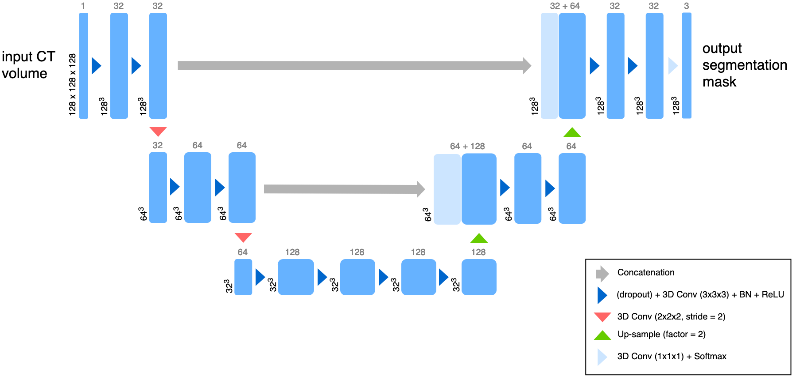
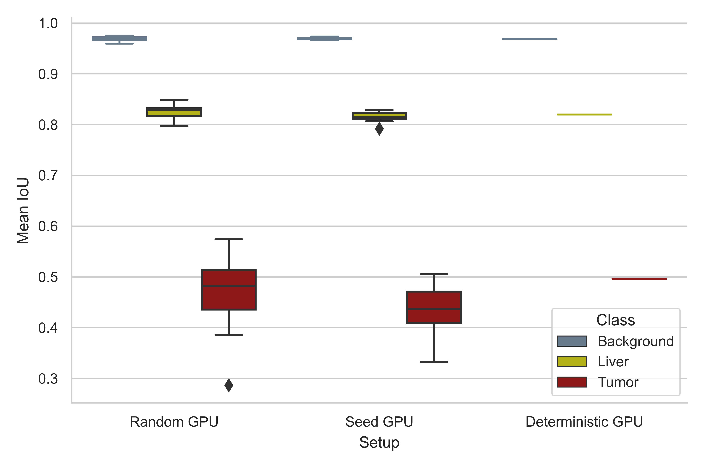

Model¶
Overview¶
The trained model is used for liver-tumor segmentation of computed tomography (CT) scans.
Training and test data¶
The training data origins from the Liver Tumor Segmentation Benchmark LiTS. 131 tomograms are part of the LiTS training dataset, from those 10% were randomly selected as a small test set (13 tomograms). The datase is available via codalab, or as a torrent.
Model architecture¶
The model is based on Pytorch and Pytorch Lightning.
A reduced 3D U-Net architecture. The U-Net is a convolutional “encoder-decoder” model for semantic segmentation of 2D and 3D images. In this simplified model, convolutional layers with a stride of 2 are used for down-sampling, while the up-sampling operation was performed with the nearest neighbor algorithm. Here, convolutions use filter sizes of 3x3x3, dropout is applied to every convolutional layer, and the softmax function is used on the last layer to produce class pseudo-probabilities. Blue boxes correspond to 3D multi-channel feature maps, with the number of channels denoted on top, and the size of the spatial dimensions marked in the lower left.
{kind=link}
Evaluation¶
A reproducibility analysis was conducted using three different experimental setups, a standard setup with disregard to reproducible calculations (Random), a setup where random seeds are defined (Seed), and the mlf-core deterministic setup (Deterministic). The LiTS dataset was randomly sampled to define a small test set (10%, 13 tomograms) and models were trained for 1000 epochs with the remainder of the tomograms, using the abovementioned experimental setups (10 training runs per setup). Reproducibility of prediction was tested by evaluating the performance of the models on the test set, using Intersection over Union (IoU) as a metric (Jaccard index).
{kind=link}
The full training history is viewable by running the mlflow user interface inside the root directory of this project:
mlflow ui.
Hyperparameter selection¶
Hyperparameters were chosen on widely known strong defaults.
Adam optimizerwas chosen for strong, general performance.The learning rate was set to
0.0001The class-weights were set to
'0.2, 1.0, 2.5'for the background, liver, and tumor respectively.The dropout rate was set to
0.25